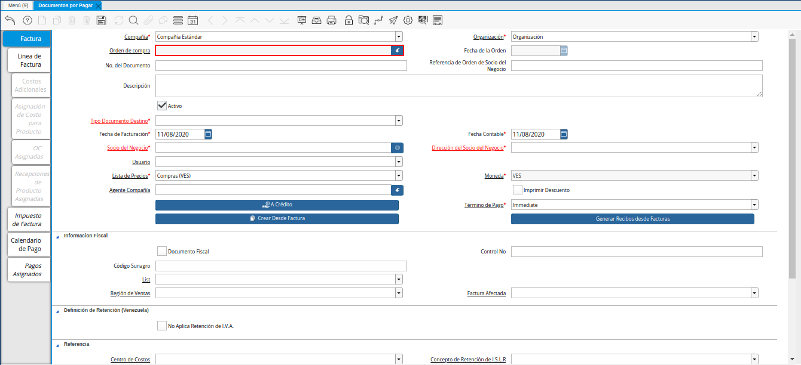

Nota de Débito¶
Es un documento que se aplica a una factura para aumentar el monto de la misma, una nota de débito se podría realizar bajo el concepto de gastos administrativos y siempre nace de un documento afectado como una factura o una nota de débito.
A continuación es explicado el procedimiento para generar en ADempiere, una nota de débito de cuentas por pagar.
Registro de Nota de Débito¶
Ubique y seleccione en el menú de ADempiere, la carpeta “Gestión de Compras”, luego seleccione la ventana “Documentos por Pagar”.
Imagen 1. Menú de ADempiere
Podrá visualizar la ventana “Documentos por Pagar”, con los diferentes registros de documentos por pagar cargados a ADempiere.
Imagen 2. Ventana Documentos por Pagar

Seleccione el icono “Registro Nuevo”, ubicado en la barra de herramientas de ADempiere, para crear un nuevo registro en la ventana “Documentos por Pagar”.
Imagen 3. Icono Registro Nuevo de la Ventana Documentos por Pagar
Seleccione en el campo “Organización”, la organización para la cual se encuentra realizando la nota de débito.
Imagen 4. Campo Organización de la Ventana Documentos por Pagar
Seleccione en el campo “Orden de Compra”, la orden de compra por la cual requiere realizar la nota de débito.

Imagen 5. Campo Orden de Compra de la Ventana Documentos por Pagar
Podrá visualizar en el campo “Fecha de la Orden”, la fecha contable de la orden seleccionada en el campo “Orden de Compra”.
Imagen 6. Campo Fecha de la Orden de la Ventana Documentos por Pagar
Introduzca en el campo “No. del Documento”, el número de identificación correspondiente al documento que se encuentra realizando.
Imagen 7. Campo No del Documento de la Ventana Documentos por Pagar
Note
Si no es ingresado ningún valor en este campo, ADempiere tomará el número de secuencia establecido para el tipo de documento seleccionado al guardar el mismo.
Introduzca en el campo “Referencia de Orden de Socio del Negocio”, la referencia de orden de socio del negocio.
Imagen 8. Campo Referencia de Orden de Socio del Negocio de la Ventana Documentos por Pagar
Introduzca en el campo “Descripción”, una breve descripción con respecto al documento que se encuentra realizando.
Imagen 9. Campo Descripción de la Ventana Documentos por Pagar
Seleccione el tipo de documento a generar en el campo “Tipo de Documento Destino”, la selección de este define el comportamiento del documento que se esta elaborando, dicho comportamiento se encuentra explicado en el documento Tipo de Documento elaborado por ERPyA.
Imagen 10. Campo Tipo de Documento Destino de la Ventana Documentos por Pagar
Seleccione en el campo “Fecha de Facturación”, la fecha en la cual es realizado el documento.
Imagen 11. Campo Fecha de Facturación de la Ventana Documentos por Pagar
Seleccione en el campo “Fecha Contable”, la fecha en la cual es realizado el documento.
Imagen 12. Campo Fecha Contable de la Ventana Documentos por Pagar
Seleccione en el campo “Socio del Negocio”, el socio del negocio al cual le esta aplicando la nota de débito.
Imagen 13. Campo Socio del Negocio de la Ventana Documentos por Pagar
Podrá visualizar en el campo “Dirección de Socio del Negocio”, la dirección del socio del negocio seleccionado anteriormente en el campo “Socio del Negocio”.
Imagen 14. Campo Dirección de Socio del Negocio de la Ventana Documentos por Pagar
Podrá visualizar en el campo “Usuario”, el usuario del socio del negocio seleccionado anteriormente en el campo “Socio del Negocio”.
Imagen 15. Campo Usuario de la Ventana Documentos por Pagar
Seleccione en el campo “Lista de Precios”, la lista de precios con la cual requiere generar la nota de débito.
Imagen 16. Campo Lista de Precios de la Ventana Documentos por Pagar
Podrá visualizar en el campo “Moneda”, la moneda definida para la lista de precios seleccionada.
Imagen 17. Campo Moneda de la Ventana Documentos por Pagar
Seleccione en el campo “Agente Compañía”, el agente de comprañía relacionado con la nota de débito que se encuentra realizando.
Imagen 18. Campo Agente Compañía de la Ventana Documentos por Pagar
El checklist “Imprimir Descuento”, indica se va a imprimir el descuento en la factura y la orden.
Imagen 19. Checklist Imprimir Descuento de la Ventana Documentos por Pagar
Seleccione la opción “Cheque”, para indicar como será pagado el documento.
Imagen 20. Opción Cheque de la Ventana Documentos por Pagar
Seleccione la opción “Crear Desde Factura”, para crear el documento desde una orden, autorización de devolución, factura o recepción.
Imagen 21. Opción Crear Desde Factura de la Ventana Documentos por Pagar
Seleccione la opción “Generar Recibos desde Facturas”, para crear y procesar el recibo de la entrega desde la factura cuando se encuentre correcta y completa.
Imagen 22. Opción Generar Recibos desde Facturas de la Ventana Documentos por Pagar
El checklist “Documento Fiscal”, indica que el registro en el que se encuentra es un documento fiscal.
Imagen 23. Checklist Documento Fiscal de la Ventana Documentos por Pagar
Introduzca en el campo “Contol No”, el número de control fiscal correspondiente al registro que se encuentra realizando.
Imagen 24. Campo Control No de la Ventana Documentos por Pagar
Introduzca en el campo “Código Sunagro”, el código sunagro correspondiente al registro que se encuentra realizando.
Imagen 25. Campo Código Sunagro de la Ventana Documentos por Pagar
Seleccione en el campo “Lista”, la lista correspondiente al registro que se encuentra realizando.
Imagen 26. Campo Lista de la Ventana Documentos por Pagar
Seleccione en el campo “Región de Ventas”, la región de ventas correspondiente al registro que se encuentra realizando.
Imagen 27. Campo Región de Ventas de la Ventana Documentos por Pagar
Seleccione en el campo “Factura Afectada”, la factura a la cual requiere aplicar la nota de débito que se encuentra realizando.
Imagen 28. Campo Factura Afectada de la Ventana Documentos por Pagar
Al tildar el checklist “No Aplica Retención de I.V.A”, no es aplicada la retención al documento que se encuentra realizando.
Imagen 29. Checklist No Aplica Retención de IVA de la Ventana Documentos por Pagar
Seleccione en el campo “Centro de Costos”, el centro de costos correspondiente para el registro que se encuentra realizando.
Imagen 30. Campo Centro de Costos de la Ventana Documentos por Pagar
Seleccione en el campo “Concepto de Retención de I.S.L.R”, el concepto de retención que requiere aplicar al registro que se encuentra realizando.
Imagen 31. Campo Concepto de Retención de ISLR de la Ventana Documentos por Pagar
Seleccione en el campo “Actividad”, la actividad correspondiente al registro que se encuentra realizando.
Imagen 32. Campo Actividad de la Ventana Documentos por Pagar
Seleccione en el campo “Retención de Terceros”, la retención correspondiente al registro que se encuentra realizando.
Imagen 33. Campo Retención de Terceros de la Ventana Documentos por Pagar
Seleccione el icono “Guardar Cambios”, ubicado en la barra de herramientas de ADempiere, para guardar el registro de los campos de la pestaña “Factura”.
Imagen 34. Icono Guardar Cambios de la Ventana Documentos por Pagar


Línea de la Factura¶
Seleccione la pestaña “Línea de la Factura”, para cargar los detalles de la nota de débito que se encuentra realizando.
Imagen 35. Pestaña Línea de la Factura de la Ventana Documentos por Pagar
Podrá visualizar en el campo “No. Línea”, el número de línea correspondiente al registro que se encuentra realizando en la pestaña “Línea de la Factura”.
Imagen 36. Campo No Línea de la Pestaña Línea de la Factura de la Ventana Documentos por Pagar
Seleccione en el campo “Producto”, el producto por el cual se encuentra aplicando la nota de débito.
Imagen 37. Campo Producto de la Pestaña Línea de la Factura de la Ventana Documentos por Pagar
Seleccione en el campo “Cargo”, el cargo por el cual se encuentra aplicando la nota de débito.
Imagen 38. Campo Cargo de la Pestaña Línea de la Factura de la Ventana Documentos por Pagar
Introduzca en el campo “Descripción”, una breve descripción correspondiente al registro que se encuentra realizando.
Imagen 39. Campo Descripción de la Pestaña Línea de la Factura de la Ventana Documentos por Pagar
Seleccione en el campo “Cantidad”, la cantidad correspondiente al registro que se encuentra realizando.
Imagen 40. Campo Cantidad de la Pestaña Línea de la Factura de la Ventana Documentos por Pagar
Seleccione en el campo “UM”, la unidad de medida relacionada al registro que se encuentra realizando.
Imagen 41. Campo UM de la Pestaña Línea de la Factura de la Ventana Documentos por Pagar
Introduzca en el campo “Precio”, el precio correspondiente a la nota de débito que se encuentra realizando.
Imagen 42. Campo Precio de la Pestaña Línea de la Factura de la Ventana Documentos por Pagar
Podrá visualizar en el campo “Precio Actual”, el precio actual ingresado en el campo “Precio”.
Imagen 43. Campo Precio Actual de la Pestaña Línea de la Factura de la Ventana Documentos por Pagar
Podrá visualizar en el campo “Precio de Lista”, el precio de lista oficial.
Imagen 44. Campo Precio de Lista de la Pestaña Línea de la Factura de la Ventana Documentos por Pagar
Seleccione en el campo “Impuesto”, el tipo de impuesto a aplicar en el registro que se encuentra realizando.
Imagen 45. Campo Impuesto de la Pestaña Línea de la Factura de la Ventana Documentos por Pagar
Podrá visualizar en el campo “Total Impuesto”, el monto total del impuesto aplicado al documento que se encuentra realizando.
Imagen 46. Campo Total Impuesto de la Pestaña Línea de la Factura de la Ventana Documentos por Pagar
Seleccione en el campo “Factura Afectada”, la factura afectada para asignar la nota automáticamente.
Imagen 47. Campo Factura Afectada de la Pestaña Línea de la Factura de la Ventana Documentos por Pagar
Seleccione en el campo “Actividad”, la actividad correspondiente al registro que se encuentra realizando.
Imagen 48. Campo Actividad de la Pestaña Línea de la Factura de la Ventana Documentos por Pagar
Seleccione en el campo “Centro de Costos”, el centro de costos correspondiente al registro que se encuentra realizando.
Imagen 49. Campo Centro de Costos de la Pestaña Línea de la Factura de la Ventana Documentos por Pagar
Podrá visualizar en el campo “Neto de Línea”, el neto de la línea.
Imagen 50. Campo Neto de Línea de la Pestaña Línea de la Factura de la Ventana Documentos por Pagar
Podrá visualizar en el campo “Total de la Línea”, el resultado de la sumatoria del valor en el campo “Neto de Línea” más el valor en el campo “Total del Impuesto”.
Imagen 51. Campo Total de la Línea de la Pestaña Línea de la Factura de la Ventana Documentos por Pagar
Seleccione el icono “Guardar Cambios”, ubicado en la barra de herramientas de ADempiere, para guardar el registro de los campos de la pestaña “Línea de la Factura”.
Imagen 52. Icono Guardar Cambios de la Pestaña Línea de la Factura de la Ventana Documentos por Pagar
Seleccione la pestaña principal “Factura” y ubique la opción “Completar”, en la parte inferior izquierda de la ventana.
Imagen 53. Pestaña Principal Factura de la Ventana Documentos por Pagar
Seleccione la opción “Completar”, para completar el documento “Nota de Débito de CxP”.
Imagen 54. Opción Completar de la Ventana Documentos por Pagar
Seleccione la acción “Completar” y la opción “OK”, para culminar el proceso.
Imagen 55. Acción Completar y Opción OK de la Ventana Documentos por Pagar


Consultar Asignación de Nota de Débito Aplicada¶
Ubique el registro de la factura asociada a la nota de débito, en este caso se ubica la factura “1000110” y posteriormente seleccione la pestaña “Facturas Pagadas”.
Imagen 56. Registro de la Factura Asociada a la Nota de débito de CxP

Haga clic contrario en el campo “Asignación” y seleccione la opción “Acercar” en el menú visualizado.
Imagen 57. Acercar Asignación de Nota de débito de CxP

Podrá visualizar el registro de la asignación creada al completar el documento “Nota de Débito de CxP”.
Imagen 58. Registro de Asignación de Nota de débito de CxP

Seleccione la pestaña “Asignaciones”, para visualizar la información del monto de la nota de débito aplicada a la factura.
Imagen 59. Pestaña Asignaciones de la Ventana Consulta de Asignación